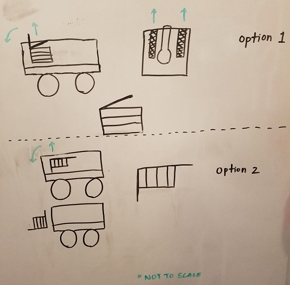
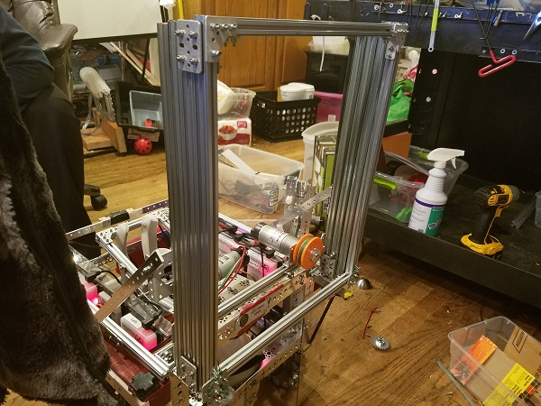

Although we're confident in our robot's ability to shoot balls and press beacon buttons, we decided that in order to be competitive, we should try to score the cap ball. The lift would have to be strong enough to lift the surprisingly heavy ball, but also not take up too much space. Our robot, as like every year, is very close to the 18 inch size limit in all directions, so we needed to think of a volume-saving method of mounting the lift. After considering several methods and remembering other lift mechanisms that we'd seen at previous competitions, we decided to use a series of sliding extrusions. It's a common design and not up to our usual standard of flair, but it's relatively small, flexible in terms of mounting, and only requires one more motor, bringing our total up to seven. We first visualized how we'd mount the lift:
 (We went with a mix of both)
Using a YouTube video guide, we were able to assemble two columns of four extrusions each that slide up when pulled by a tough string, which is wound around a spool connected to the new motor. It is mounted on top of the robot rather than on a side because we had the most clearance in the vertical direction. It then rotates forward and stands in the correct position, the motor rotating with it. After several rounds of testing, we decided to use a faster motor, and it proved to be successful in speeding up the lift's ascent.
Although it won't be ready for our qualifier, we've made very solid progress on this lift. There are several problems which still need to be tackled. First, we need to figure out what we're going to use to actually grab the cap ball. The lift is useless without it, and even if we use some simple pieces of wood and a servo, there needs to be something there. Second, there is a large space between the rotation point of the lift and the ground, which means that it must somehow reach down in order to wrap around whatever claws we devise around the ball.